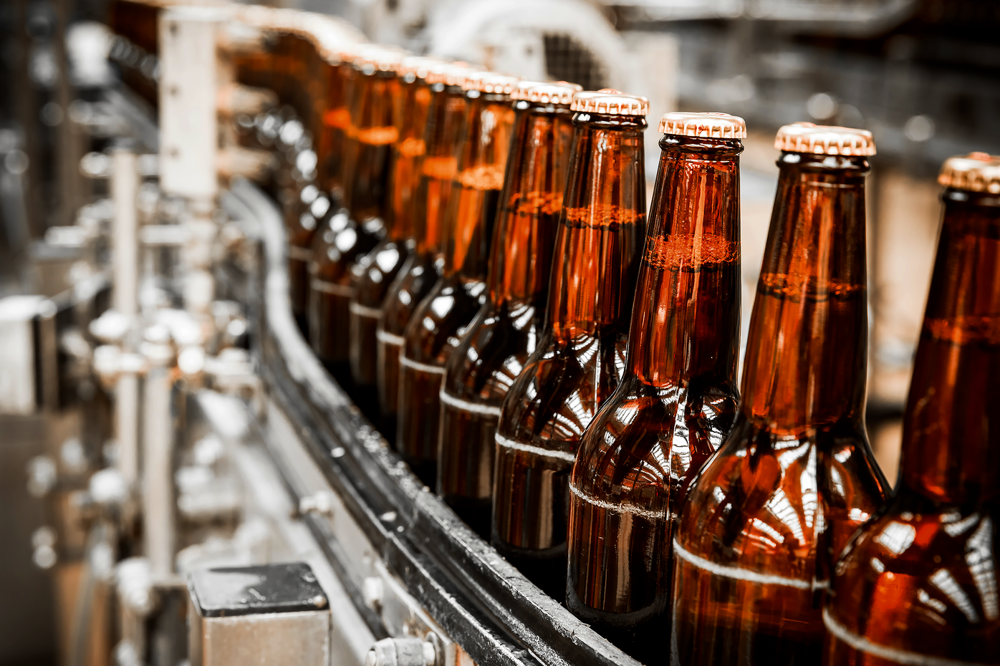
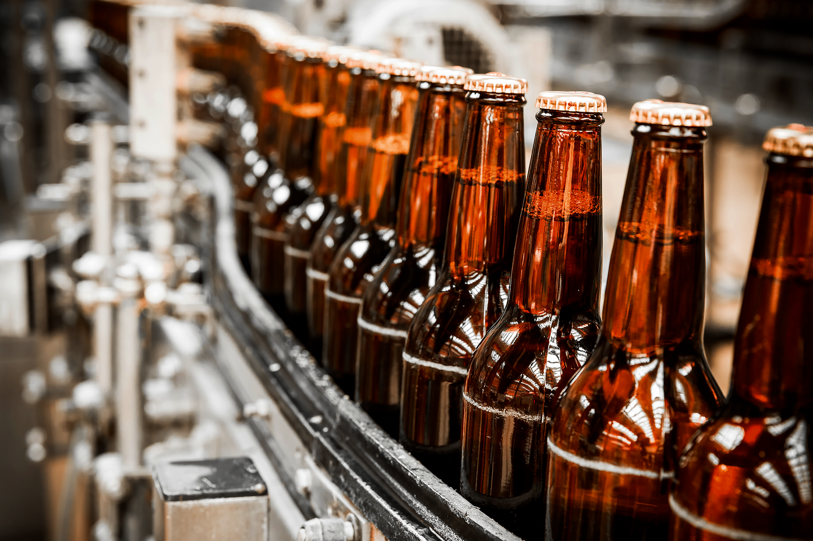

X X X
Crafted to Inspire You Since 1896
Even now, 120 years later, you can enjoy real beer brewed according to medieval recipes.
In 1896, a small brewery was opened by brewers from Europe. Despite the fact that New York had already been a huge metropolis, fame about our brewery went all over the city. Within 5 years, our small brewery was serving several each month thousand customers who were true craft beer fans.
Time passed, and the brewery expanded. Our business was threatened with closure during the Great Depression but we survived. After the Second World War, meetings of veterans were often held in our brewery, Over a glass of delicious beer, they recalled the old days and commemorated the dead.
«Today our brewery is one of the largest craft beer venues in New York. We have kept the recipes of the late 19th century, and we strictly adhere to them. The combination of traditions and new technologies allowed us to offer the best beer styles for true connoisseurs.»

1896
● Our brewery was opened
1990
● 3 fantastic tastes were added
1990
● 3 fantastic tastes were added
2003
● Modernization of all equipment
2022
● Restaurant opening

x x x
Our Brewery
Our brewery is a combination of old traditions and modern equipment. We brew beer with love and attention to detail.


 
